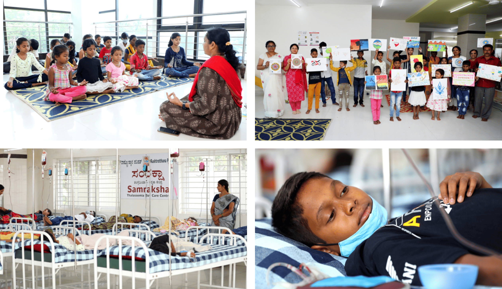
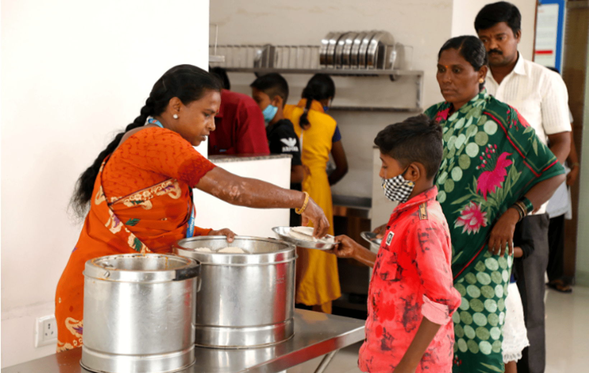

Thalassemia
Thalassemia is a group of inherited blood disorders that affect
the body's ability to produce hemoglobin, a protein in red blood cells that carries oxygen. Thalassemia is a
genetic blood disorder characterized by the reduced production of hemoglobin.
The condition leads to anemia, which can cause fatigue, weakness,
and pale skin.
Symptoms
- May have no symptoms or mild anemia.
- Anemia (fatigue, weakness, shortness of breath), bone deformities, enlarged spleen,
slow growth, iron overload.
Diagnosis
- Blood tests (complete blood count, hemoglobin electrophoresis)
- Genetic testing

Treatment
- Blood transfusions,
- Iron chelation therapy (to remove excess iron),
- Bone Marrow Transplant (in some cases).
Complications
- Iron Overload
- Infection
- Bone Deformities
- Enlarged Spleen
- Retarded Growth
- Liver and Heart related Problems
Samraksha
Launched on August 19, 2013, the Samraksha initiative began by
providing treatment for 19 children diagnosed with Thalassemia. Over the years, this life-saving service has
expanded significantly, supporting over 400 adult and paediatric age group patients by 2025.
Through systematic and specialized care, the program has
significantly improved patient survival rates and quality of life. Many beneficiaries have achieved complete
recovery, demonstrating the effectiveness of the comprehensive medical interventions provided.
What we do for the Holistic Wellbeing of Patients
Blood Transfusion
Emotional Support
Family Counseling
Proper Nutrition
Other Medical Support
At Samraksha, we ensure that
patients receive holistic care, which includes:
In-House Blood transfusion and Care: Rashtrotthana Blood Centre provides
specifically processed and appropriate blood components to reduce complications for the children
suffering from Thalassemia who need repeated transfusion throughout their life.
Supervision during Transfusion: Dedicated team of doctors and nurses provide
complete care during the blood transfusion.
Recreation: Samraksha is bedecked with toys to keep the children occupied
during transfusion so that they don't panic and suffer from anxiety.
Library: A library, exclusively dedicated to children is set up to keep them
engaged and provide a good read.
Testimonials
A Haven for the Patients
I travel all the way from West
Bengal for my blood transfusions because, back home, hospitals ask me to arrange a blood donor every time.
It was exhausting and stressful. But here, at the Samraksha Project, everything is taken care of by the
hospital itself. I don't have to worry about anything. The environment is peaceful, and the staff is kind
and supportive. I finally feel safe and cared for, without the constant fear of where my next transfusion
will come from.
A Second Home After Betrayal
After the death of my shauhar (husband), my own son
abandoned me and my daughter, who suffers from thalassemia. We were left with no shelter, no support, and no
hope. But then, the Samraksha Project embraced us with open arms. Here, we found not just medical care but
also the warmth of a family. I will always remain grateful to the people behind this initiative, who proved
that humanity still exists in this world.
A Lifeline in My Darkest Days
Losing my father left me completely helpless. I had
no one to turn to, and survival itself became a challenge. That's when the Samraksha Project became my
biggest support. They not only provide me with free blood transfusions and essential medicines but also
ensure that I don't go hungry by offering breakfast and lunch. More than medical care, they gave me dignity
and hope. Without Samraksha, I don't know how I would have survived.
A Mother's Unbreakable Spirit
When my father married another woman, he told my
mother to let me die because he couldn't afford my treatment. But my mother refused to give up on me, She
started washing utensils in other people's houses just to afford my medical expenses. Then, she found out
about the Samraksha Project, and everything changed. Now, I receive free treatment, blood transfusions, and
care without any financial burden. The kindness of this place has given my mother and me a new life. I will
forever be grateful to the team at Samraksha for standing with us when no one else did.
